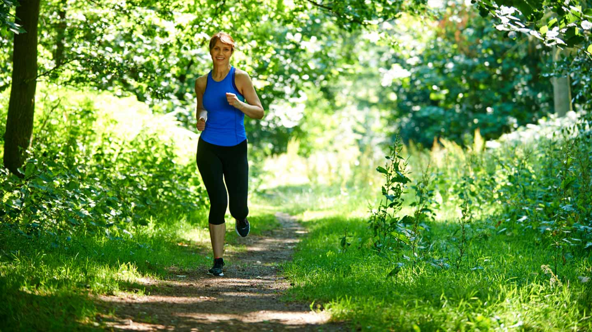

Welcome to Nattira's fitness journey!
My Philosophy
I believe fitness is more than just physical appearance; it's about building a balanced and healthy lifestyle that strengthens both the body and mind. Consistency, patience, and mindfulness are at the core of my approach. I focus on listening to my body, embracing progress, and making exercise a sustainable, enjoyable part of daily life.
My Goals
My fitness goals are centered around building strength, improving flexibility, and enhancing overall mobility. I aim to master bodyweight exercises, perfect my handstands, and develop a deeper connection with yoga. Ultimately, I strive to create a well-rounded routine that keeps me energized, injury-free, and continuously improving.
Workout Tips
1. Start small and stay consistent: Even 10-15 minutes a day can make a big difference over
time.
2. Focus on form: Proper technique is key to avoiding injuries and getting the most out of your
workouts.
3. Prioritize recovery: Stretch, foam roll, and get enough sleep to allow your muscles to recover
and grow.
4. Set achievable goals: Break down larger goals into smaller milestones to track your
progress.
5. Find what you enjoy: Whether it’s yoga, strength training, or calisthenics, doing what you love
will keep you motivated.